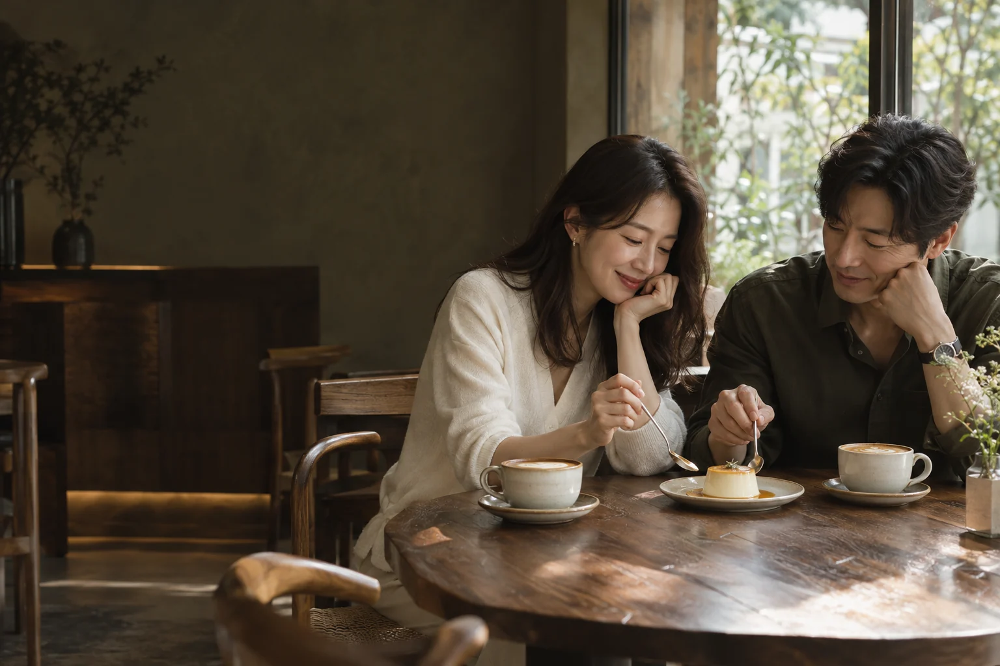
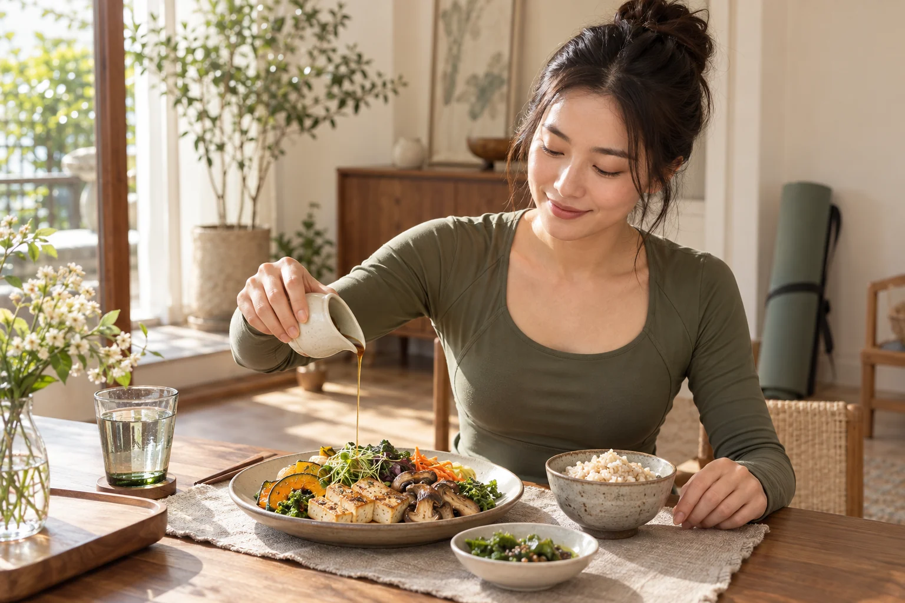
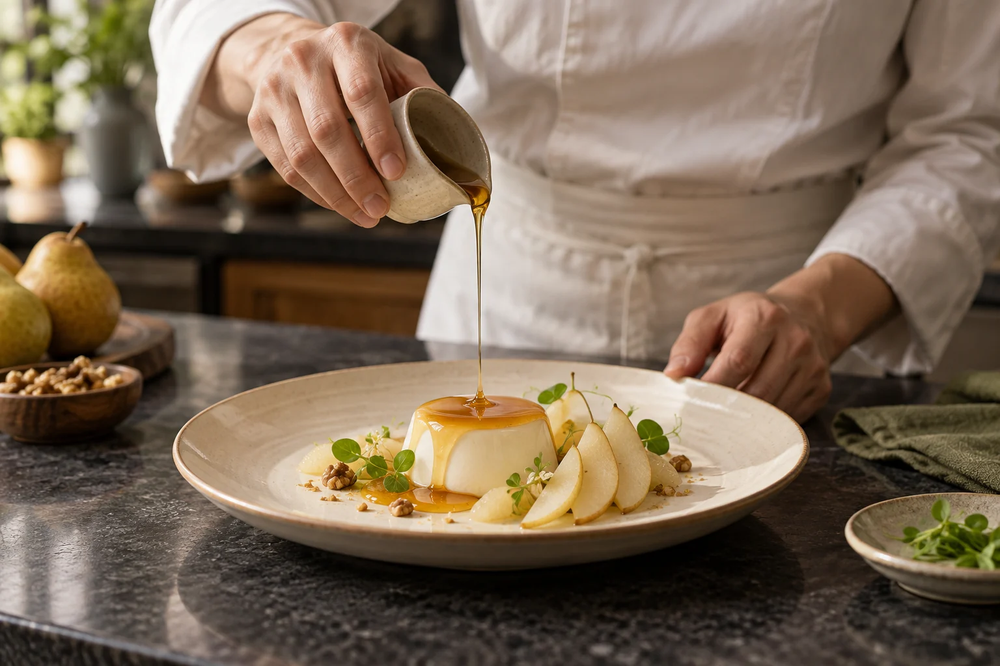
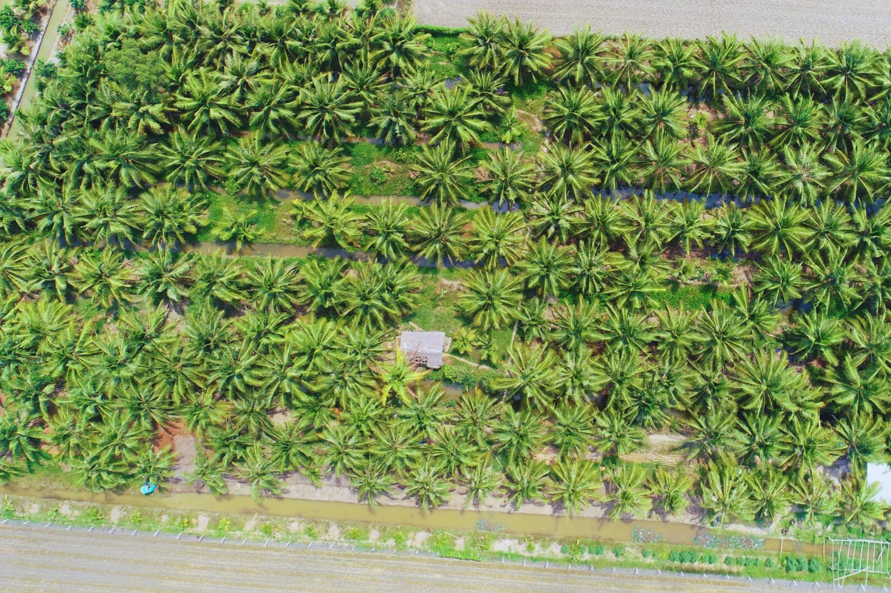

COCONUT FLOWER NECTAR
디저트를 완성하는 은은한 달콤함

A MATTER OF TASTE
섬세한 취향을 위한 선택
새로운 풍미를 발견하고, 원료의 출처까지 살펴보는 취향.
더코코는 속팜의 코코넛 꽃 수액 식품을 국내에 소개합니다.
좋은 공간에서의 경험이 당신의 식탁으로 이어지도록.
 손끝에서 시작되는 자연의 맛
손끝에서 시작되는 자연의 맛THE ORIGIN OF TASTE
코코넛 꽃에서 정성스럽게 채취한 달콤한 수액.
베트남 크메르 공동체가 이어온 전통에서
속팜의 이야기가 시작됩니다.
시럽과 설탕, 발효소스와 음료까지.
하나의 원료가 일상 속 다양한 맛으로 이어집니다.
SELECTED COLLECTION
미세한 맛의 차이를 만드는
코코넛 블라썸의 다양한 표현.
전체 제품 4개
COCONUT FLOWER NECTAR
디저트를 완성하는 은은한 달콤함
COCONUT FLOWER SUGAR
음료와 파티스리에 더하는 깊이
COCONUT AMINOS
다양한 요리를 채우는 깊은 풍미
COCONUT BLOSSOM DRINK
새롭게 경험하는 코코넛 꽃의 맛
제품의 국내 판매 구성은 공식 스토어 오픈 시 안내합니다.
공식 스토어 안내
MOVE WELL · EAT MINDFULLY
운동을 즐기고, 식재료를 꼼꼼하게 고르는 일상.
두부와 버섯, 채소 요리에 새로운 풍미를 더해 보세요.
FOR EXCEPTIONAL SPACES
메뉴 한 접시에서 정성스러운 선물까지.
더코코가 제안하는 세 가지 장면.

 코코넛 꽃 시럽
코코넛 꽃 시럽디저트와 브런치, 다이닝의 소스에 코코넛 꽃 시럽을 활용해 보세요. 메뉴의 개성을 표현하는 새로운 감미 재료를 제안합니다.
카페·다이닝·식탁 사진은 활용 장면의 이해를 돕기 위한 연출 이미지입니다.
WHAT WE VALUE
원료의 출처, 생산자의 정성, 풍미의 쓰임.
더코코가 소중히 생각하는 기준입니다.

코코넛 꽃에서 채취한 수액이
다양한 식품이 되는 과정을 소개합니다.
농장과 생산자의 이야기를
제품의 맛과 함께 전합니다.
호텔 다이닝부터 프리미엄 카페까지,
공간에 어울리는 원료의 쓰임을 제안합니다.
GROW WITH THE COCO
호텔·프리미엄 카페·리테일을 위한 제품 제안.
선별된 유통 채널과의 파트너십을 지향합니다.